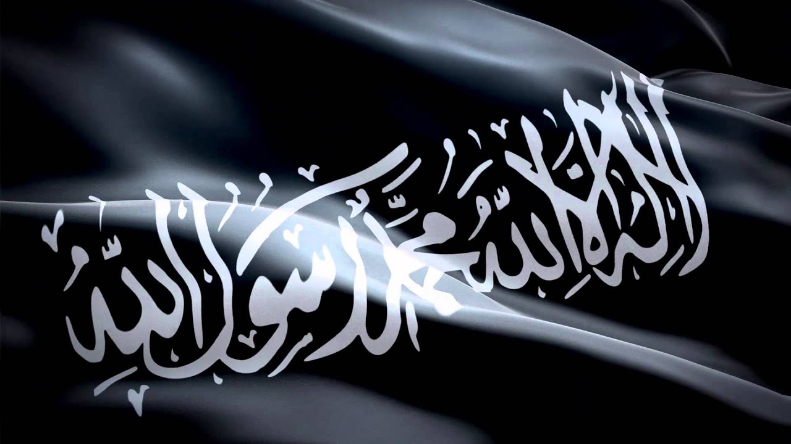
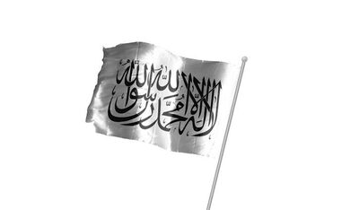
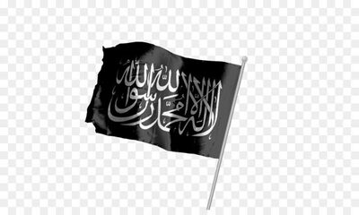

<link rel="icon" href="img\historiislam.ico" type="image/x-icon">
<link href="css\style.css" rel="stylesheet" type="text/css"/>
<DOCTYPE html>
<html>
	<head>
		<title>Краткое История Ислама</title>
		<meta charset="UTF-8" />
		<meta name="keywords" content="histori, islam, historiislam" />
		<meta name="description" content="История Ислама берёт свое начало от начала пророчества Мухаммада(салаЛлаху алейхи уа саллям) и заканчивается периодом правления Мамлюков.Османцы не были последним халифатом, они принесли в Ислам много нововведений, которые не делали не кто доних" />
	</head>
	<body>
		<div id="a100js" class="a100">
			<div class="b100"></div>
		</div>
	<div id="page-wrap">
		<header>
			<a href="index.html" title="На главную" id="logo">История Ислама</a>
			<a href="https://t.me/histori_of_islam" title="На наш канал в телегармме" id="contact">Телеграмм</a>
			<a href="https://t.me/Islamskiyeviktsrinibot" title="Свяжись с нами" class="obr">Обратная свазь</a>
		</header>
		<div class="clear"><br/></div>
	<center>
		<div id="menu">Меню<hr/></div>
		<div id="menuH">
			<a href="histori.html">История и Биография</a>
			<a href="sss.html">Ссылки</a>
			<a href="vopros.html">Где проходят уроки??</a>
		</div>
	</center>
		<div id="wrapper">
			<div id="back_to_top" class="back-to-top">
				
			</div>
			<div id="home"><a href="index.html"></a></div>
            <div id="articles">
                <h1>История ислама</h1>
                <div class="clear"><br/></div>
		<article>
                    
                    <h1>Праведный халифат</h1>
                    <p>Это государство от границ Персии до Ливии и от Аравии до Кавказа.
                        <br/>Их первым халифом был Абу Бакр последним был Хасан ибн Али.<br/>
                        Рода у них не была, там был вибор народом халифа</p>
                </article>
                <article>
                    
                    <h1>Омейяды</h1>
                    <p>Это государство от границ Китая до Испании и от Аравии до Кавказа. Омейяды делится 1 в Дамаске 2 в Кордове
                        <br/>Их первым халифом был Муваия ибн Абу Суфьян последним был Хишам ибн Мухаммад(Тут была опечатка: Хишам III, а не Хишам IV).<br/>
                        Их род бану умая</p>
                </article>
                <article>
                    
                    <h1>Аббасиды</h1>
                    <p>Это государства берёт от Монголии до Марокко и от Аравии до Кавказа. Аббсиды это халифат идёт от рода Аббаса да Будет давелен Аллах
                        <br>Их первым был Абуль Аббас<br>
                        Последний Мухаммад аль-Мутаваккиль Алаллах</p>
                </article>
            </div>
			
		</div>
	</div>
		<footer>
			<span id="histori">Самая актуальная история на 2023 год &copy;</span>
			<span id="con"><a href="https://t.me/histori_of_islam"></a></span>
		</footer>
		<script src="js/jquery.js"></script>
		<script src="js/index.js"></script>
	</body>
</html>
